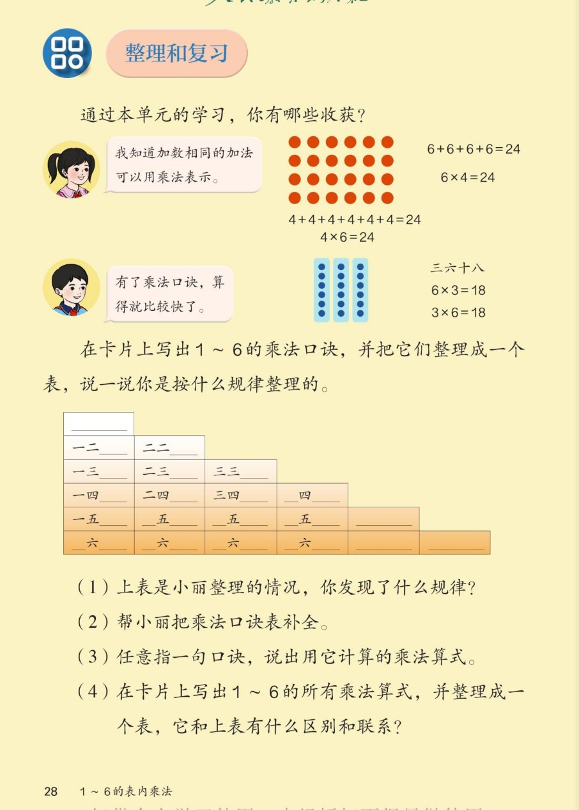

🔊 1~6的表内乘法 · 课本第 28 页 · 整理和复习
人教版《数学》二年级上册 · 有声图文带读 · 先想后看解析
题数
6
认知
2
强化
3
拓展
1
本页重点
单元收获·口诀表规律·补全口诀表
🎧 分两步学：
① 解析教材图片
——纯声音读图，读到哪一块哪一块闪动提示；关键处先倒计时让你思考，再在图片下方给出解析并朗读。
② 分层提问练习
——六道分层题（认知 / 强化 / 拓展），先思考再展开解析、朗读参考答案；这一步不再回到图片。
也可以随时点任意一句话、图上任意一块单独听；点课本文字卡还会展开答案。
教材图片（点块听读，读到哪块哪块闪）

📖 人教版《数学》二年级上册 · 课本第 28 页 · 图片仅供个人学习，版权归人民教育出版社所有
🤔 想一想（点我可跳过）
课本的文字（点句子：听读 + 看答案）
收获 ①
加数相同的加法可以用乘法表示（4 行 6 列红点阵）
看答案 ▾
横着数：6+6+6+6=24 →
6×4=24
（4 个 6）；
竖着数：4+4+4+4+4+4=24 →
4×6=24
（6 个 4）。
🌈 同一个点阵，横看竖看写出两道乘法算式
收获 ②
有了乘法口诀，算得就比较快了（蓝点阵：三六十八）
看答案 ▾
3 列、每列 6 个 → 6×3=18；3 个 6 → 3×6=18。
一句口诀
三六十八
，能算两道算式，又对又快。
整理任务
写出 1~6 的乘法口诀，整理成一个表，说说整理的规律。
看答案 ▾
小丽的整理法：
第几行就是几的口诀
——
第 2 行是 2 的口诀，第 3 行是 3 的口诀……每行从"一几"开始。
🌈 也可以按列整理，横竖都成规律
第（1）问
小丽整理的口诀表，你发现了什么规律？
看答案 ▾
规律一：
第几行就是几的口诀（第 3 行都是 3 的口诀）；
规律二：
每行从"一几"开始，依次"二几、三几"；
规律三：
第几行就有几句口诀（第 2 行 2 句，第 6 行 6 句）。
第（2）问
帮小丽把乘法口诀表补全。
看答案 ▾
第 4 行：
一四得四、二四得八、三四十二、
四四十六
；
第 5 行：
一五得五、二五一十、三五十五、四五二十、
五五二十五
；
第 6 行：
一六得六、二六十二、三六十八、四六二十四、五六三十、
六六三十六
。
第（3）问
任意指一句口诀，说出用它计算的乘法算式。
看答案 ▾
示例一：
三四十二 → 3×4=12、4×3=12；
示例二：
五六三十 → 5×6=30、6×5=30；
示例三：
六六三十六 → 6×6=36（只有一个乘数相同的算式）。
第（4）问
写出所有乘法算式整理成表，和口诀表有什么区别和联系？
看答案 ▾
区别：
口诀表按口诀排，算式表按算式排；
联系：
一句口诀一般对应
两道
算式（如 3×4 和 4×3）；
两个乘数一样的口诀（如六六三十六）只对应
一道
算式。
分层提问练习（先想后看解析）
🔴
认知
红点阵可以写出哪两道加法算式和哪两道乘法算式？
看解析
🤔 想一想
解析：
加法：6+6+6+6=24；4+4+4+4+4+4=24
乘法：6×4=24；4×6=24
💡 横数 4 个 6，竖数 6 个 4
🔵
认知
蓝点阵用哪句口诀？写出两道乘法算式。
看解析
🤔 想一想
解析：
口诀：三六十八
6×3=18；3×6=18
📐
强化
口诀表是按什么规律整理的？
看解析
🤔 想一想
解析：
第几行 = 几的口诀（第 4 行都是 4 的口诀）
每行从"一几"开始；第几行就有几句
💡 按这个规律，空格也能自己推出来
✍️
强化
补全口诀表：第 4 行最后一句？第 6 行各句？
看解析
🤔 想一想
解析：
第 4 行最后一句：四四十六
第 6 行：一六得六、二六十二、三六十八、四六二十四、五六三十、六六三十六
👆
强化
指口诀"三四十二"，说出用它计算的算式。
看解析
🤔 想一想
解析：
3×4=12
4×3=12
💡 一句口诀，一般能算两道算式
🌈
拓展
算式表和口诀表有什么区别和联系？
看解析
🤔 想一想
解析：
区别：
口诀表排口诀，算式表排算式
联系：
一句口诀 ↔ 一般两道算式；乘数相同的口诀（六六三十六）只有一道
🌈 想想还有哪几句口诀只对应一道算式
① 解析教材图片
② 分层提问练习
⏹ 停止
纯声音 + 高亮跟随 · 想好才出解析
← 返回导航